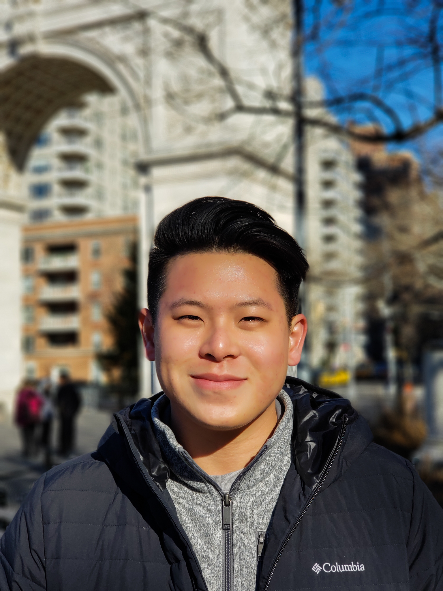

I'm a Computational Biologist at Vividion Therapeutics in San Diego. I completed my PhD in Computational Biology and Bioinformatics at Duke University, where I spent five years studying how chromatin structure shapes gene regulation.
I write code, analyze genomes, build tools, make music, and think a lot about how cells decide what genes to turn on. Sometimes I do all of these on the same day.

Kevin Moyung · San Diego, CA
My PhD research in the MacAlpine Lab at Duke (co-advised by Alex Hartemink) centered on a simple but deep question: how does chromatin structure determine which genes get turned on, in which cells, at which times?
I developed computational methods for analyzing chromatin accessibility data — particularly ATAC-seq and MNase-seq — to map transcription factor binding, nucleosome positioning, and regulatory element activity across the genome. A lot of footprinting. A lot of peak calling. A lot of staring at genome browser tracks.
Now at Vividion Therapeutics, I apply those skills in a drug discovery context — using computational approaches to identify and prioritize therapeutic targets. [Add a sentence here about your specific work at Vividion if you're comfortable sharing it.]
When I'm not analyzing genomes, I'm usually making music. I produce under the name hellayung — [add a sentence about your sound/genre/influences]. I find that the creative problem-solving in music production and in computational biology have a lot more in common than you'd think.
[Optional — if you're open to opportunities, add a sentence here. Or if you're not looking, remove this section entirely. Something like: "I'm always open to conversations about interesting problems at the intersection of genomics and machine learning. If you're working on something that fits that description, I'd love to hear about it."]
You can also find me on GitHub where I occasionally open-source tools and pipelines from my research, and on LinkedIn for professional stuff.
Collaborations, opportunities, science questions, or just want to say hi — my inbox is open.